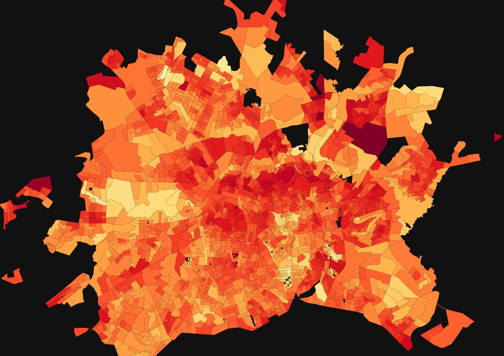
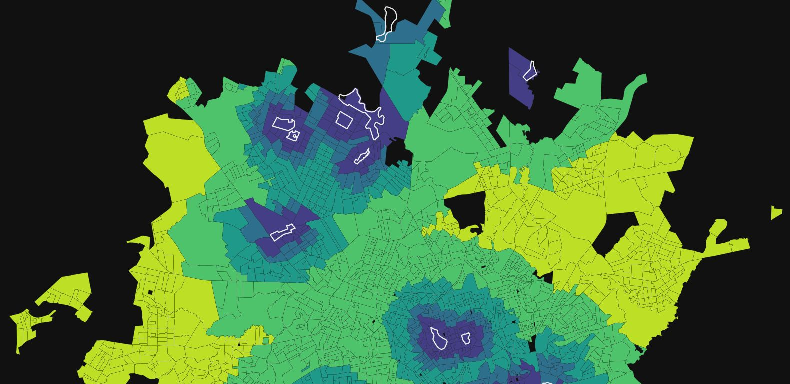
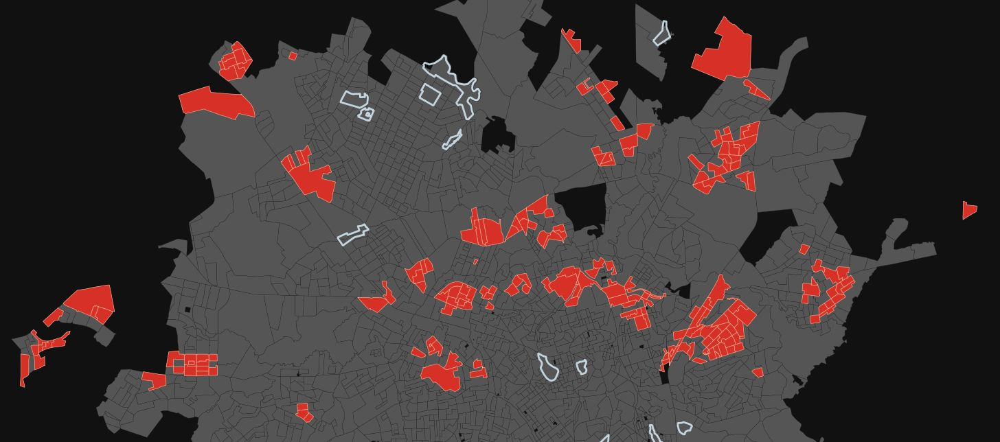

html`<table class="tabela-numeros">
<thead><tr><th>Grupo</th><th>Árvores (%)</th><th>Construído (%)</th><th>NDVI médio</th><th>Temperatura média</th></tr></thead>
<tbody>${estatQuintis.map((d) => html`<tr class=${d.quintil === 5 ? "linha-destaque" : ""}>
<td>Q${d.quintil}</td><td>${fmt(d.arvore, 1)}</td><td>${fmt(d.construido, 1)}</td><td>${fmt(d.ndvi)}</td><td>${fmt(d.media)} °C</td></tr>`)}
</tbody></table>
<p class="legenda-grafico">Médias por grupo de renda, calculadas a partir da tabela de setores.</p>`Cidade verde para quem?
Calor, vegetação e renda nos setores censitários de Goiânia
Calor, vegetação e acesso a parques entre os setores censitários de Goiânia, por faixa de renda.

Cidade verde para quem?
Calor, vegetação e renda nos setores censitários de Goiânia
Hannah Grecco Moraes Baptista Moreira
Como Goiânia aparece no noticiário
Foto: Jackson Rodrigues / Prefeitura de Goiânia
Goiânia é a cidade mais arborizada do Brasil
O Hoje · 16 mai. 2019
Foto: Jackson Rodrigues / Prefeitura de Goiânia
Goiânia celebra 90 anos como capital mais verde
O Hoje · 9 out. 2023
Foto: reprodução / Curta Mais
Goiânia recebe título de Cidade Arborizada do Mundo da ONU
Metrópoles · 11 mar. 2024
Mas a média de uma cidade inteira não conta toda a história. A cidade é feita de pessoas, e a sombra, o frescor e o verde perto de casa podem mudar bastante de um setor para outro.
Esta história pergunta para quem é a cidade verde. A análise cruza imagens de satélite com o Censo 2022 em setores urbanos para ver como o calor e o acesso ao verde se dividem entre quem mora nos setores de maior renda e quem mora nos de menor renda.
°C
É o quanto a superfície é mais fresca onde moram as pessoas de maior renda, em comparação com os outros quatro grupos. Entre esses quatro, quem mora enfrenta praticamente o mesmo calor.
km
É a distância mediana até um parque grande para quem mora nos setores de menor renda. Para quem mora nos de maior renda, km.
setores onde moradores de renda baixa convivem com calor alto e ficam a mais de 2 km de qualquer parque grande. São os lugares candidatos a receber ação primeiro.

1 Por que olhar para o calor?
Uma rua arborizada e uma rua só de asfalto recebem o mesmo sol.
Não esquentam do mesmo jeito.
Asfalto, telhados e solo exposto acumulam o calor do dia. Árvores, vegetação e água ajudam a dissipá-lo. Por isso o calor de uma cidade não se espalha por igual: ele se concentra em alguns lugares, e em quem mora, trabalha e anda a pé por eles.
É aqui que entra a ideia de justiça ambiental. Os benefícios do ambiente, como a sombra e o verde, e os seus custos, como o calor, também podem ser divididos de forma desigual. Muitas vezes, quem fica com a parte mais quente da cidade é quem tem menos meios para se proteger dela.
Em Goiânia, a sombra e o frescor estão divididos por igual entre os setores da cidade?
Para responder, a análise se divide em três perguntas menores:
Calor Quem mora nos setores de menor renda enfrenta superfícies mais quentes?
Verde Esses setores têm menos árvores e vegetação?
Acesso Ficam mais longe de um parque grande?
O objetivo não é provar que a renda causa o calor, e sim medir se essa diferença existe e onde ela é mais forte.
2 Só os setores de maior renda são mais frescos
Entre cinco grupos de renda, só o de renda mais alta vive em setores mais frescos.
Os grupos Q1 a Q4 têm temperatura muito parecida: as medianas ficam entre e °C. Só o Q5 se separa, °C abaixo da média dos outros quatro.
Como ler o gráfico: cada faixa horizontal é um grupo de renda. Q1 reúne os setores de renda mais baixa e Q5 os de renda mais alta. Os grupos são posições relativas (cerca de um quinto dos setores cada), não linhas de pobreza.
Correlação de Spearman entre renda e temperatura: , uma associação moderada.
Isso quer dizer que não existe uma escada em que cada aumento de renda traz um pouco de frescor. A vantagem está concentrada no topo.
3 Não é só falta de árvore
A explicação mais óbvia, “onde a renda é menor, há menos árvores”, não se sustenta na média.
A hipótese inicial era que os setores de renda baixa teriam menos vegetação e mais área construída, e por isso seriam mais quentes. Os dados não confirmaram isso na média: o grupo de renda mais baixa tem até mais árvores e menos área construída do que os grupos intermediários.
O contraste mais curioso está no topo: o Q5 tem a menor cobertura de árvores (%) e a maior área construída (%) entre os cinco grupos, e mesmo assim é o grupo mais fresco.
Também foi testado se o solo exposto e a grama seca explicariam a diferença, e essa explicação também não se sustentou. A vantagem do grupo de renda mais alta continua depois de levar em conta vegetação, área construída, solo, altitude e distância a parques.
O que isso sugere, sem provar: olhar a cobertura do solo a cada 10 metros não conta a história toda. O tipo de telhado, os materiais das construções, a altura dos prédios e o desenho das ruas também podem pesar na temperatura, e nada disso foi medido aqui.

Distância de cada setor ao parque grande mais próximo: do roxo (até 500 m) ao amarelo (mais de 4 km). Contorno branco: parques.
4 Parques: perto é mais fresco, mas nem todos estão perto
km de um parque para quem mora nos setores de maior renda. km para quem mora nos de menor renda.
A análise considera os parques acima de 10 hectares. Os setores mais próximos tendem a ser mais frescos, com uma diferença de cerca de °C entre os setores a menos de 500 m e os que ficam entre 2 e 4 km. Essa relação não continua além de cerca de 4 km.
Como os parques estão mais perto dos setores de maior renda, o benefício de frescor também se distribui de forma desigual.

Estar perto não quer dizer por causa. Setores vizinhos de parques podem ter outras características em comum, como o padrão de ocupação, que também pesam na temperatura. Mesmo assim, o padrão é firme: ele continua praticamente igual quando saem da conta os setores que têm um parque dentro dos seus limites.

Em vermelho, os setores prioritários; em contorno claro, os parques grandes.
5 Onde agir primeiro
setores reúnem, ao mesmo tempo, renda baixa, calor alto e nenhum parque grande por perto. São % dos setores da cidade e os candidatos a receber ação primeiro.
Para transformar o diagnóstico em prioridade, cada setor marcado atende às três condições:
Renda Q1 ou Q2 os dois grupos de renda mais baixa
Calor acima de °C percentil 75 de toda a cidade
Acesso mais de 2 km até o parque grande mais próximo
Esse critério é uma escolha explícita, feita para orientar onde olhar primeiro, e não um diagnóstico definitivo. No simulador abaixo, você pode mudar cada uma das três condições e ver como o conjunto muda. Ao abrir, ele reproduz o critério do estudo.
Como usar o simulador: marque ou desmarque grupos de renda, mova os controles de temperatura e distância e veja o mapa e a contagem mudarem. As linhas tracejadas mostram setores que estavam no critério do estudo e saíram com a sua escolha.
Ao variar os limites (percentil, distância, grupos de renda), o conjunto muda de tamanho, mas as manchas principais permanecem.
6 Explore o mapa
Troque a camada, passe o mouse para ver o valor de cada setor e clique em um setor para ver todos os dados dele. No celular, toque no setor. Para dar zoom, use os botões, Ctrl + rolagem ou dois dedos.
7 Os dados
| O que | De onde | Como entrou na análise |
|---|---|---|
| Temperatura da superfície | Landsat 8 e 9, banda térmica, ago–set 2026 | Temperatura de brilho média por setor, em °C |
| Vegetação (NDVI) | Landsat 8 e 9, refletância de superfície (nível 2), mesmas datas | NDVI médio por setor |
| Renda | IBGE, Censo 2022 | Rendimento mediano dos responsáveis com rendimento, já divulgado pelo IBGE para cada setor |
| Setores | IBGE, malha de setores censitários 2022 | Unidade de análise: setores urbanos, após a máscara urbana |
| Cobertura do solo | ESA WorldCover 2021, 10 m | % da área do setor com árvores, área construída, grama e solo exposto |
| Altitude | SRTM, 30 m | Altitude média por setor, usada como controle no modelo de regressão |
| Parques | OpenStreetMap, parques acima de 10 ha ( polígonos) | Distância do centroide do setor ao parque grande mais próximo |
Ferramentas. O Google Earth Engine acessou e processou as imagens Landsat, o SRTM e o WorldCover e calculou as estatísticas de cada setor. Em Python, com GeoPandas, pandas e OSMnx, as camadas foram organizadas, as informações cruzadas e as áreas e distâncias calculadas; a correlação de Spearman, a regressão e a estatística espacial (Moran’s I) também foram feitas em Python. O Quarto, com Observable JS e MapLibre, monta esta página.
8 Passo a passo da análise
- Recorte da área urbana. Uma máscara retirou zonas rurais e vazios que distorcem a média de um setor.
- Cálculo da temperatura média de cada setor a partir das imagens de satélite.
- União de renda, cobertura do solo, altitude e distância a parques na mesma tabela, uma linha por setor.
- Divisão dos setores em cinco grupos de renda (quintis), da renda mais baixa (Q1) à mais alta (Q5).
- Comparação da temperatura entre os grupos, com um teste para ver se a diferença se mantém depois de controlar por vegetação, área construída, altitude e parques.
- Marcação dos setores prioritários com um critério explícito, com um teste de sensibilidade a esse critério.
9 Limites
- Associação, não causa. A análise mostra onde calor, verde e renda se encontram, não que a renda cause o calor.
- Superfície, não ar. A temperatura de brilho mede o calor da superfície vista pelo satélite. Serve para comparar setores entre si, não equivale à temperatura do ar nem à sensação térmica.
- Datas diferentes. A renda é do Censo 2022; as imagens são de agosto e setembro de 2026, no período seco.
- Renda do responsável. O indicador é a renda do responsável pelo domicílio, não a de todos os moradores.
- Um valor por setor. A média do setor esconde diferenças rua a rua, e setores muito pequenos têm valores menos confiáveis.
10 Glossário
- Setor censitário
- A menor área para a qual o IBGE divulga dados de renda do Censo.
- Quintil
- Cada um dos cinco grupos em que os setores foram divididos pela renda mediana, do Q1 (renda mais baixa) ao Q5 (mais alta). É uma posição relativa, não uma linha oficial de pobreza.
- Temperatura de superfície
- Temperatura do material visto de cima pelo satélite (telhado, asfalto, solo, copa das árvores). Não é a temperatura do ar.
- NDVI
- Índice de vegetação calculado com as bandas do vermelho e do infravermelho próximo. Quanto mais alto, mais vegetação verde e ativa.
- Mediana
- O valor do meio quando os setores são ordenados. Metade fica abaixo e metade acima; é menos sensível a extremos do que a média.
- Percentil
- O percentil 75 da temperatura é o valor abaixo do qual estão 75% dos setores.
- Correlação de Spearman
- Mede se duas variáveis sobem ou descem juntas, usando a ordem dos valores. Vai de −1 a 1; valores negativos indicam que, quando uma sobe, a outra tende a descer.
- Regressão (OLS)
- Modelo que estima quanto a temperatura muda com a renda quando outras variáveis (vegetação, área construída, altitude) ficam constantes.
- Autocorrelação espacial (I de Moran)
- Tendência de setores vizinhos terem valores parecidos. Quando é forte, os testes estatísticos comuns parecem mais precisos do que são.
- Parque grande
- Área de parque do OpenStreetMap com mais de 10 hectares.
- Justiça ambiental
- Ideia de que os benefícios e os prejuízos ambientais não deveriam se concentrar em grupos sociais específicos.
11 Referências
Foli, A. C. A. (2026). Produção do espaço urbano, ilhas de calor e vulnerabilidade em Goiânia (GO): uma contribuição aos estudos da Geografia do Clima. Tese de doutorado, Universidade Federal de Goiás. Repositório UFG. Principal referência local.
Hsu, A., Sheriff, G., Chakraborty, T., & Manya, D. (2021). Disproportionate exposure to urban heat island intensity across major US cities. Nature Communications, 12, 2721. https://doi.org/10.1038/s41467-021-22799-5 Referência metodológica para relacionar calor e características socioeconômicas.
Sousa, S. B. de, & Ferreira, L. G. (2012). Análise da temperatura de superfície em ambientes urbanos: um estudo por meio de sensoriamento remoto no município de Goiânia, Goiás (2002–2011). Confins, 15. https://doi.org/10.4000/confins.7631
Código aberto. Os notebooks, os scripts e a tabela por setor estão em github.com/HannahGrecco/goiania-thermal-justice.
NotaFiguras estáticas
Versões em imagem dos principais gráficos e mapas, para consulta rápida, impressão ou uso em apresentações. Clique para ampliar.